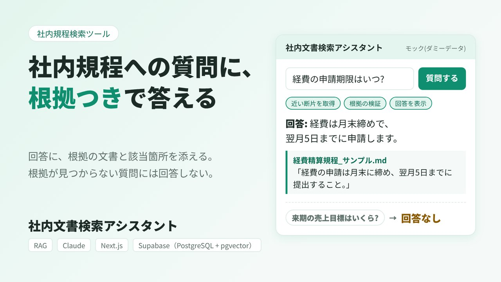
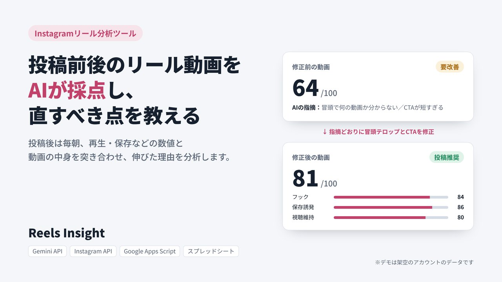
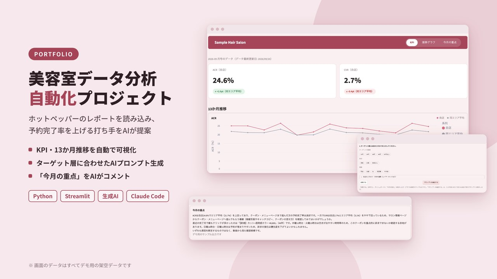

yumeno-kimoto › 人物
Yumeno Kimoto 木本夢乃 ─ 業務の困りごとを、使える道具にする人
業務の困りごとを整理して、使えるツールに変える仕事をしています。要件定義から設計・実装まで、AI駆動開発で担当します。山口県を拠点に、フルリモートで全国の企業の業務効率化・業務自動化をお手伝いしています。小さなことでも、まずはお気軽にご相談ください。
業務 困りごと 相談 に一致する人が 1 件見つかりました！
スクロールしてください
検索しています...
約 1 人・3 件の実績が見つかりました（0.27 秒）
yumeno-kimoto › 人物
業務の困りごとを整理して、使えるツールに変える仕事をしています。要件定義から設計・実装まで、AI駆動開発で担当します。山口県を拠点に、フルリモートで全国の企業の業務効率化・業務自動化をお手伝いしています。小さなことでも、まずはお気軽にご相談ください。
RAG ／ 文書検索
社内規程への質問に、根拠となる文書と該当箇所を添えて答えます。根拠が見つからない質問には答えません。
Next.js ／ TypeScript ／ Claude ／ OpenAI Embeddings ／ Supabase
デモを見る ↗固定のダミーデータで動くモックです

Instagram 分析
リールが伸びた理由を、数値と動画の中身から分析します。数値は毎朝自動で取得し、採点と改善案まで出します。
Apps Script ／ Instagram Graph API ／ Gemini API

データ分析ダッシュボード
美容室の予約・顧客データをもとに、サロンの状況を一画面で確認できるダッシュボードです。
Streamlit ／ Python
デモを見る ↗初回の表示に時間がかかることがあります

業務の整理と要件定義／Google Apps Script・スプレッドシートでの自動化／Claude・Gemini APIを使った分析ツール、文書検索（RAG）／Streamlitのダッシュボード／WordPressのサイト制作
何を作るか、どこまで作るか、どう確かめるかは私が決め、実装の多くをAIと進めています。社内文書検索では、根拠のない質問には答えない設計にし、判断の記録と検証方法も残しています。
パッケージソフトの導入コンサルタント、社内DX・業務改善を経て、2026年8月から個人で業務ツールの設計・開発をしています。くわしく
週40時間程度、フルリモートで稼働できます。
いま困っていることを、そのまま書いてください。
人物 ／ 山口県の業務改善・AI駆動開発のフリーランスエンジニア
業務を理解し、技術でより良い形に変えていくことを仕事にしています。導入コンサルタントとして要件定義や顧客折衝を経験したあと、社内DXで業務改善に取り組み、現在は山口県を拠点に、AI駆動開発で業務ツールを作っています。
個人開発・フリーランス
業務ツールの設計・開発。2026年9月から本格的にスクールでAI駆動開発の概念を学びながら実践中。
事業会社 社内DX・業務改善
公式LINEとGoogleフォームで交通費精算をシステム化し、月次作業時間を50%削減。
ソフトウェア会社 導入コンサルタント
パッケージソフトの導入で、要件定義・顧客折衝・進捗管理〜データ移行・環境構築・テスト・運用保守を一気通貫して担当。
Next.js, TypeScript, Python, Streamlit, Supabase, Google Apps Script, Claude, Gemini API, OpenAI API, WordPress
週40時間程度、フルリモートで稼働できます。